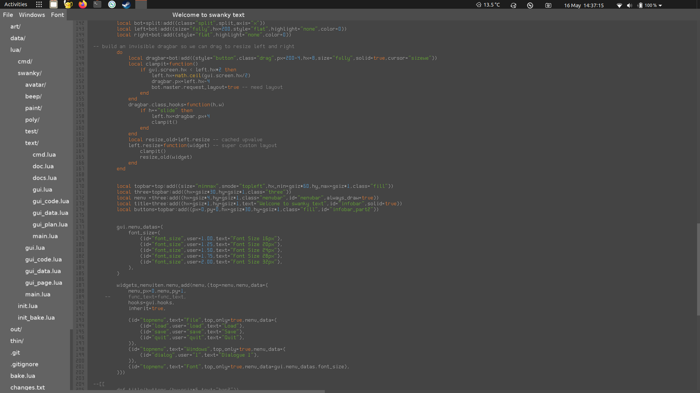
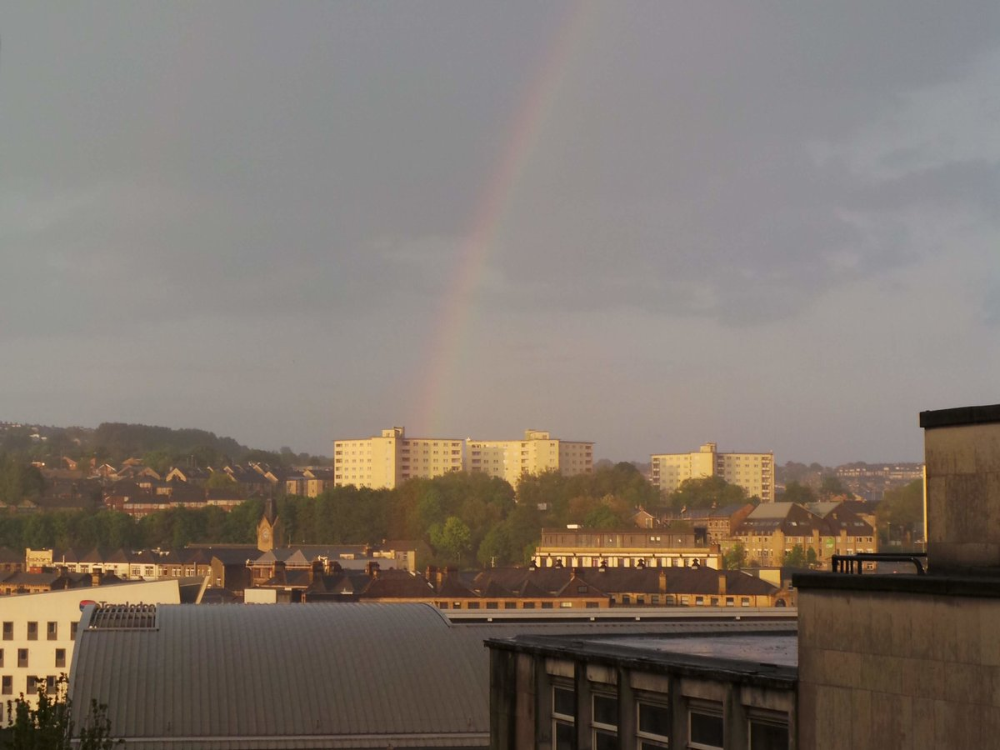

So windows 10 is getting native GPU support in its linux subsystem?
Which means, at some point in the future, in order to get a malfunctioning steam game to run on windows 10, you may be recommended to install linux subsystem, install steam and use proton...
https://twitter.com/PatrickFreyne1/status/1263071973703389184 @PatrickFreyne1 I remember wondering why as a kid and later deciding it was a godfather reference but still not being sure why.
A quick search now shows up, "Oranges as harbinger of death" starting with the godfather, so, you know, it probably even makes sense :)
https://twitter.com/nachimir/status/1262405024283537409 @nachimir @shi Have you tried Satisfactory? Not quite the scope of NMS but the base building/exploring for resources feels very similar (and is better)
Added bonus, because it is all about automation, it rewards you for taking a break making a cup of tea and just watching the day go by :)
https://twitter.com/nachimir/status/1262351359933849603 @nachimir I started playing magic hat mode with @shi in pancake mode on Saturday and it works a lot better than I thought it would in VR.
Much better than Fallout 4 or Skyrim which just did not really translate well into VR.
https://twitter.com/wetgenes/status/1261813289153179649 @johnmclear Personally I mostly use Geany.
and I don't actually want to replace it, I've been happy using geany for years.
it is just that I kind of am heading in that direction because of other projects :)
@johnmclear This is kind of specifically so I can decouple https://xriss.github.io/fun64/pad/ from a web browser and gui/system dependencies.
Which bizarrely enough gives me the option to put it back into a web browser using wasm and keep the same interface offline and on.
The text editor is technically working, but, having written it, I am actually too scared to use it...
I think I need to add real time undo persistence to disk before I can get past that fear.
#screenshotsaturday 
My memories of playing Tony Hawk's 1 is standing up at an arcade machine, so proper joystick and buttons.
... and it worked surprisingly well like that.
(I had just fitted my Playstation into my JAMMA cab when the game came out, so that's where the ps1 was)
New social distancing rules.
The UK is now playing a nationwide game of sardines.
Whenever a person finds another person, they quietly join them in their isolation.
https://twitter.com/WACKOFPS/status/1259560654115082240 @WACKOFPS Technically, stadia is cheat proof, since everything happens server side...
I expect to learn more about this terrifying lert shortage in the following days.
The newly constructed window seat has already paid for itself in rainbows. 
and if that still doesn't work maybe try disabling Windows. https://twitter.com/pcgamer/status/1258743636847734784
Beware of fascists celebrating victory in Europe.
https://twitter.com/suddiraval/status/1258711756341424128 @suddiraval Environmental storytelling.
Why are there so many chonky bois in gears of tactics?
https://twitter.com/evilpaul_atebit/status/1258356493851770882 @evilpaul_atebit it can make sense to fork another library into a branch so it can be hacked around with, kept close to your main source and still be pushed back to its original repo easily if you make any useful changes.
I also keep built binaries in a branch with no history, so only latest.
Not only does Death Race 2000 predict extra points for killing grandma but I strongly suspect the main plot predicts how this all ends.